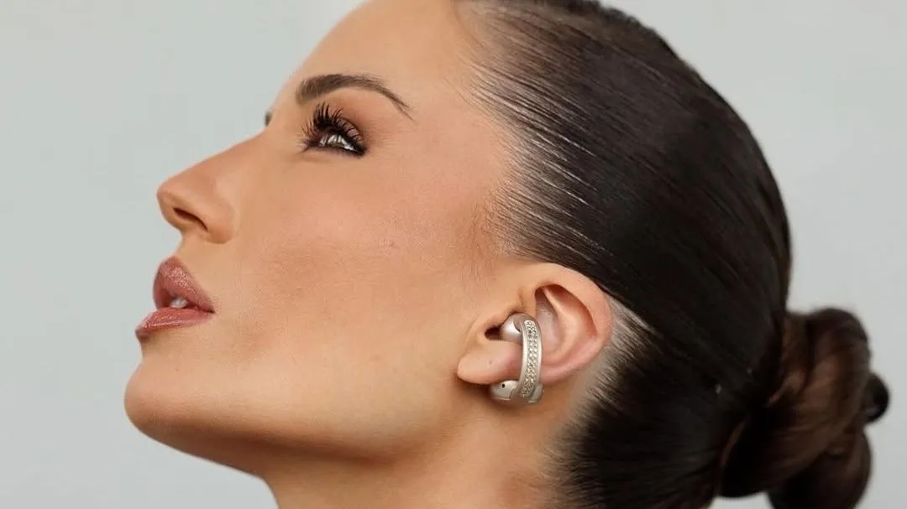

Informação que atravessa todos os mundos
Página Inicial
Sociedade & Inspiração
Ciência & Tecnologia
Moda & Entretenimento
Sobre Nós
Contato
Notícia em Destaque
Louis Vuitton une moda e confeitaria em coleção para a Páscoa 2026
Sociedade & Inspiração
Cachorrinho abandonado em aeroporto é adotado por policial que o resgatou
Idosa impedida de estudar pelo marido entra na universidade aos 65 anos
Ciência & Tecnologia

Fone que imita brinco e usa IA antirruído vence Prêmio Canaltech
Polilaminina surge como nova esperança no tratamento de lesões medulares no Brasil
Moda & Entretenimento
Louis Vuitton une moda e confeitaria em coleção para a Páscoa 2026
Shakira bate recorde de público ao reunir mais de 400 mil pessoas em show gratuito no México